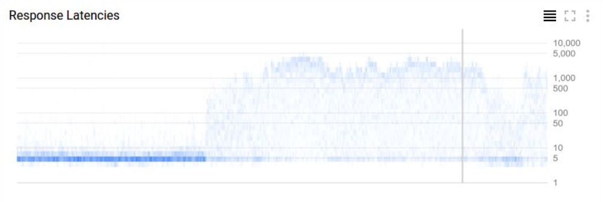
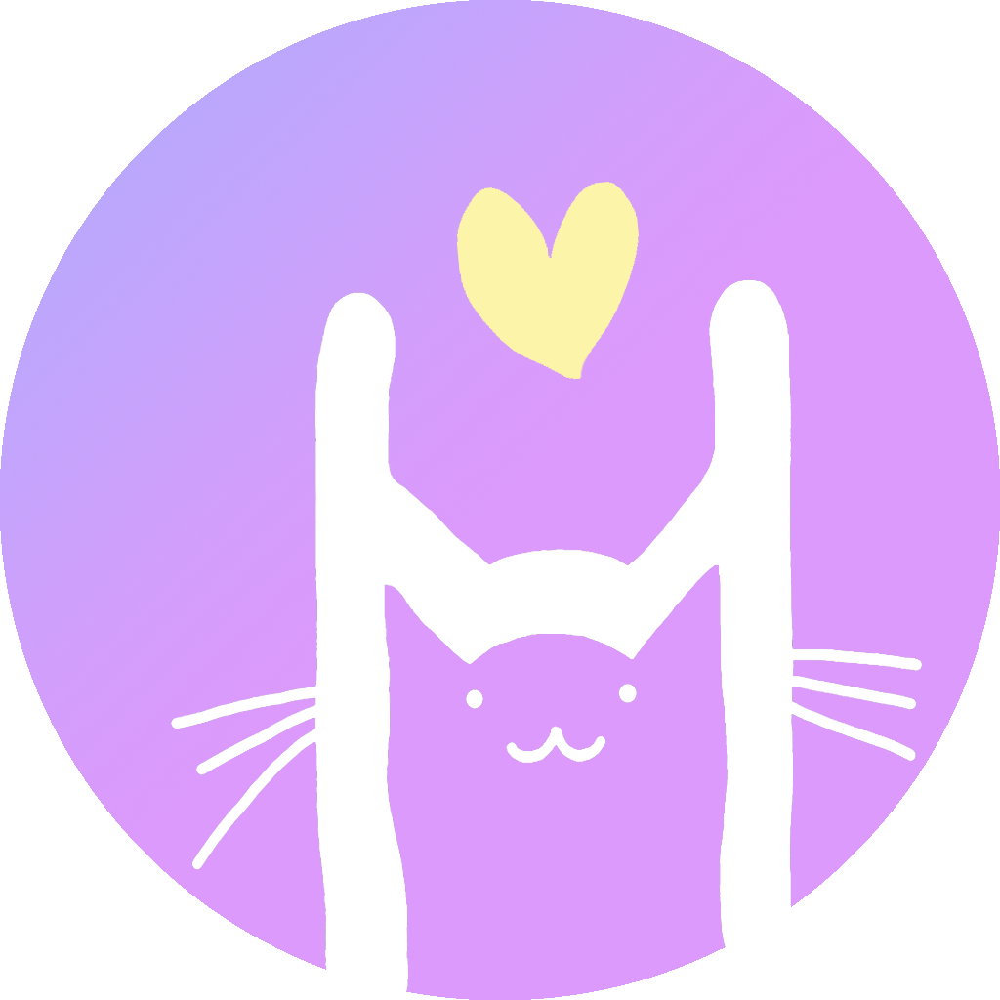
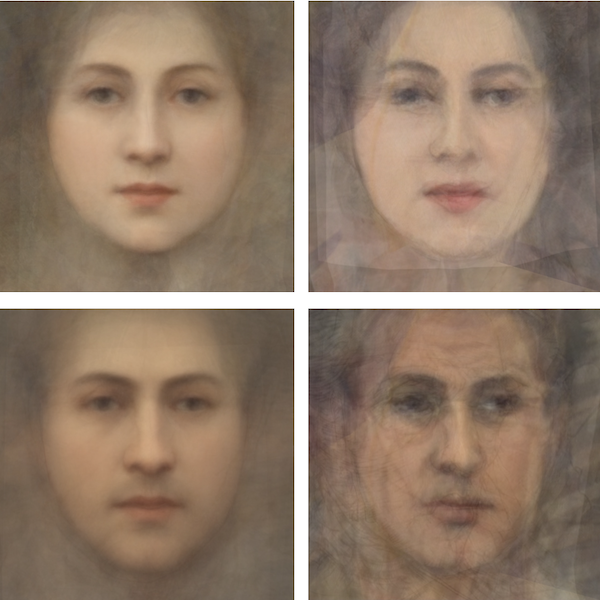
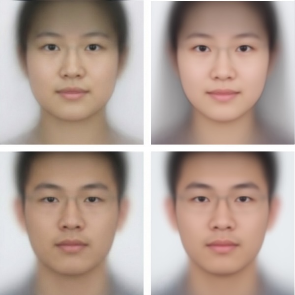
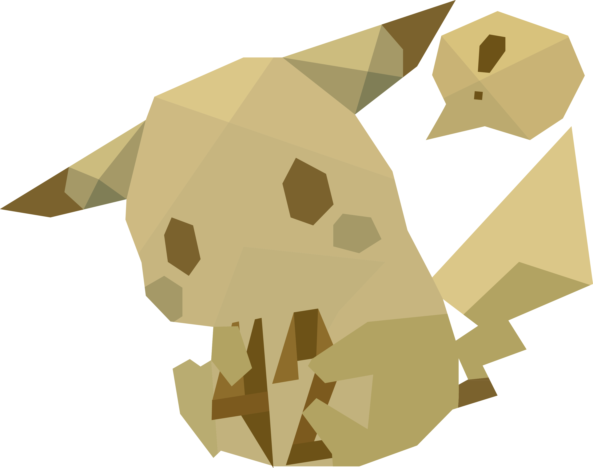
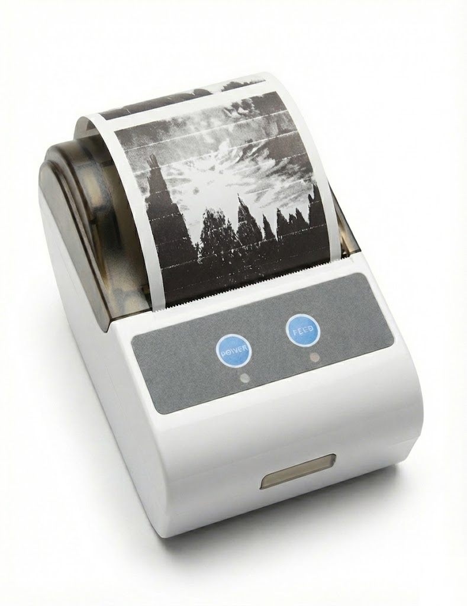

Heatmap showing distribution over time. Used by Google Cloud.

TeX user group event
Impression of seasons

How you would see yourself in the AI era?

This is how artists viewed themselves in their works. We averaged their self-portraits. Left: Renaissance, Right: Modern.

This is how young adults viewed themselves in their portraits. We averaged their photos. Left: On-site capture, Right: Self-uploaded.
Icons designed for Tsinghua University TUNA association.

Logo 42

An experiment with thermal printer before the popularization of Paperang (喵喵机). It prints out a photo on the go with an QR code attached for the original image, allowing sharing of the photo with someone met on the street.